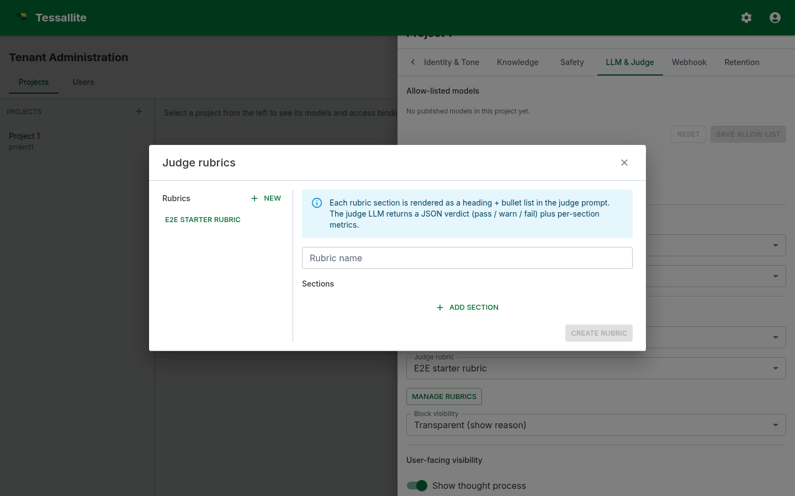

Write a judge rubric
What this covers
The judge is a second LLM that scores every answer the agent produces against a rubric. This article explains why the judge exists, how a rubric is shaped, how to write sections that the judge can act on consistently, and how to calibrate the rubric using the metrics the platform already records.
Why a judge
A grounded LLM still drifts. It can pick the wrong measure, misread a clarifying question as a refusal, or narrate a number with a confident phrasing that the data does not support. The judge runs after the answer has been formed and either signs it off (pass), flags a minor gap (warn), or blocks it (fail). Two products fall out: a real-time guardrail and a continuously updating quality signal visible on the dashboard.
What a rubric is
A rubric is a JSON document with a name and a list of sections. Each section is a focused criterion the judge applies to the answer. The agent service ships with a default rubric so projects work out-of-the-box; you author a tenant-specific rubric when the defaults do not match your domain.
Each section has three optional fields: a title (used as the metric key), a body paragraph the judge reads as guidance, and a list of pass/fail bullets. A good section names one concern.

What makes a section easy to judge
LLMs evaluate answers more consistently when the criterion is framed as a small number of binary tests. Three patterns work well:
- Must contain. "Every numeric answer that quotes revenue must include the currency."
- Must not contain. "Phrases like 'I think', 'this is probably' must not appear."
- Must justify. "Every aggregated number must be paired with the time window."
Avoid sections that ask the judge to evaluate tone, novelty, or insight — they produce verdicts that drift across runs.
How the judge maps a rubric to a verdict
The judge LLM is told to read the answer plus the rubric and return one JSON object with a verdict (pass/warn/fail), a one-paragraph reasoning, and a per-section metrics map. The verdict aggregates across sections; the reasoning paragraph is what users see when Judge block visibility is set to transparent.
Calibrating the rubric
Calibration tightens sections until verdicts match what an admin would say if reviewing each answer by hand. Open Project Agent → Metrics → Recent calibration; for each row, check whether you would have agreed with the judge. If not, edit the rubric — tighten the body, add a bullet, or split an over-broad section. Re-run Run eval to catch regressions. Three rounds of calibration are usually enough to push pass-rate above 80 % on a well-modelled project.
Choosing async vs sync mode
Async is the default. The user latency is unchanged; the verdict appears later in the trace drawer. Use this for internal tooling. Sync runs the judge before the answer is delivered — required for external surfaces or regulated domains, but it adds the judge call's wall time to user-visible latency. Pick the cheapest, fastest LLM you can stomach for the judge.
Common pitfalls
- Sections that overlap. Each section should be one concern.
- Vague bullets. "The answer should be useful." is unjudgeable. Replace with binary tests.
- Long bodies, no bullets. The judge over-weights the closing sentence.
- Sync mode with a slow judge. User latency suffers.
- Skipping calibration. Reserve an admin half-hour each week to walk Recent calibration.